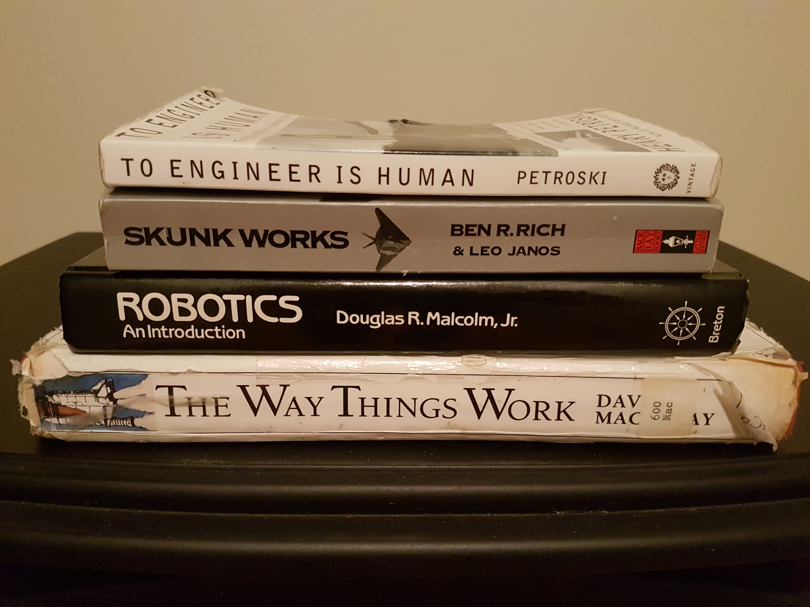

Here’s a list of some of the engineering books in my life.
Currently Reading
- Inside the Machine: An Illustrated Introduction to Microprocessors and Computer Architecture, by Jon Stokes
- Command and Control: Nuclear Weapons, the Damascus Accident, and the Illusion of Safety, by Eric Schlosser
Read
- The Culture Map: Breaking Through the Invisible Boundaries of Global Business, by Erin Meyer
- Dare to Lead: Brave Work. Tough Conversations. Whole Hearts, by Brené Brown
- Stuff You Don’t Learn in Engineering School, by Carl Selinger
- My Inventions, by Nikola Tesla
- A Brief History of Time, by Stephen Hawking
- The Design of Everyday Things, by Don Norman
- Robotics: an Introduction, by Douglas R. Malcolm
- Zen and the Art of Motorcycle Maintenance, by Robert M. Pirsig
- Skunk Works, by Ben R. Rich
- Einstein’s Dreams, by Alan Lightman
- To Engineer is Human, by Henry Petroski
- The Unwritten Laws of Engineering, by W.J. King
- Ship of Gold, by Gary Kinder
- Peopleware, by Tom DeMarco
